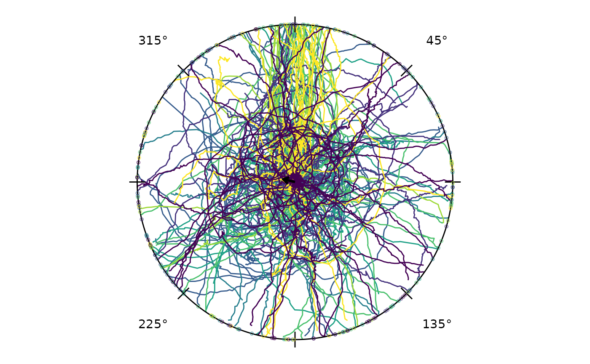
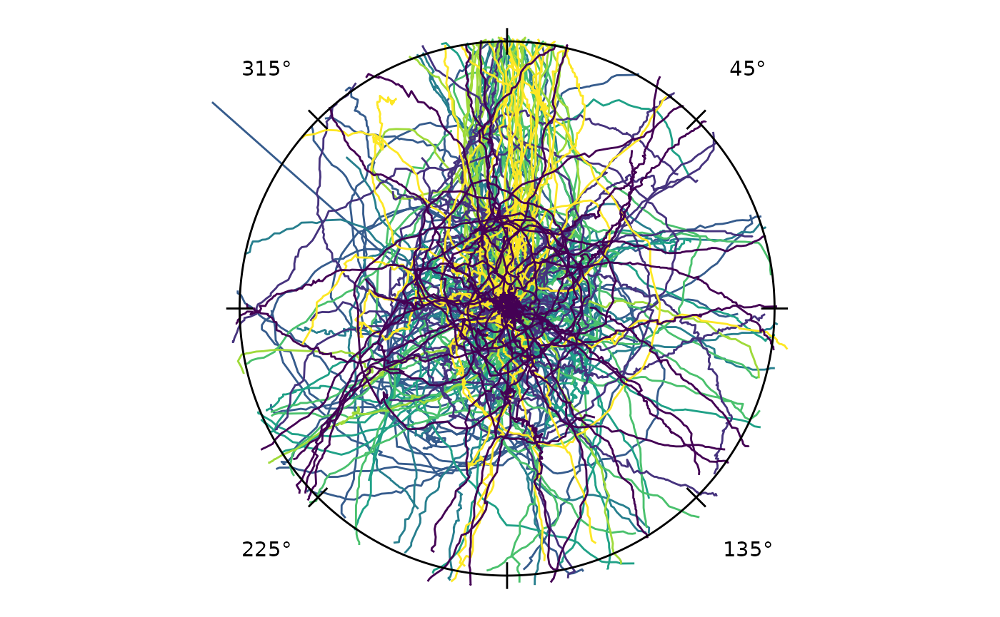
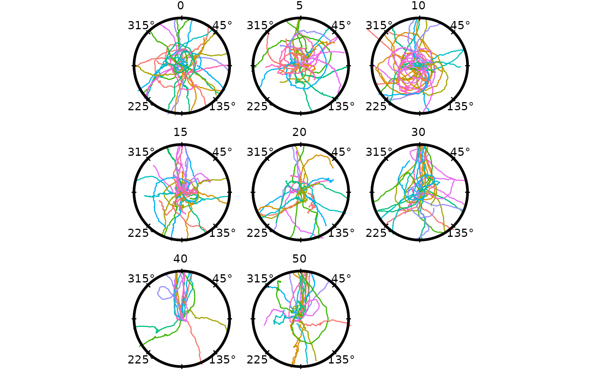
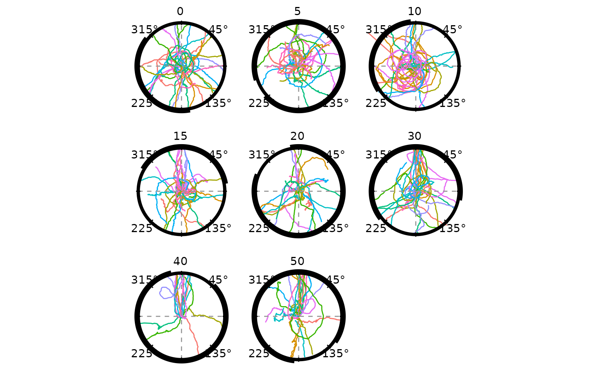
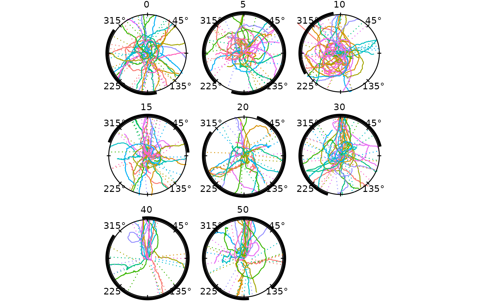
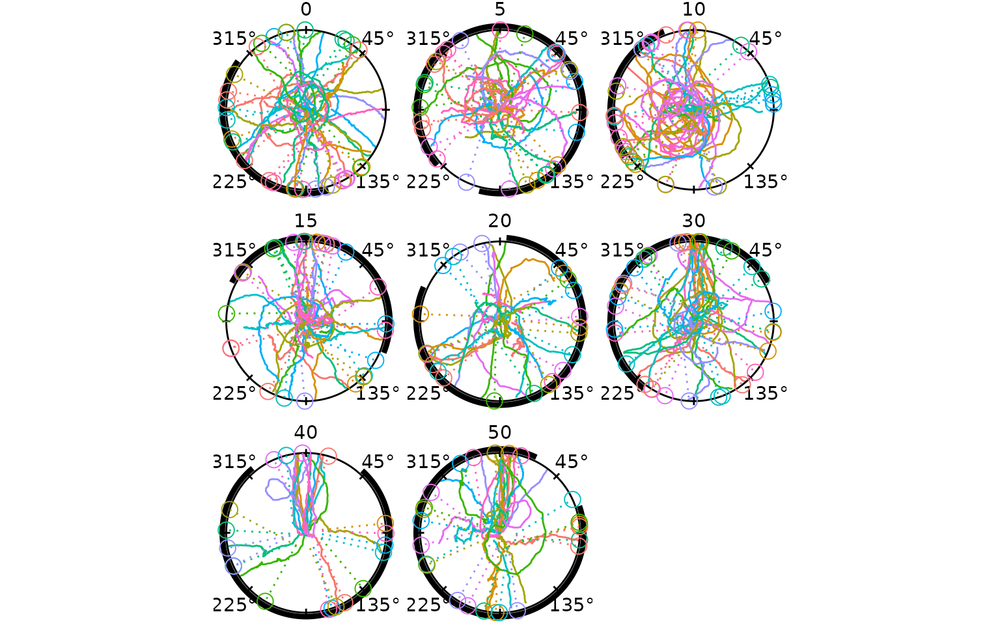
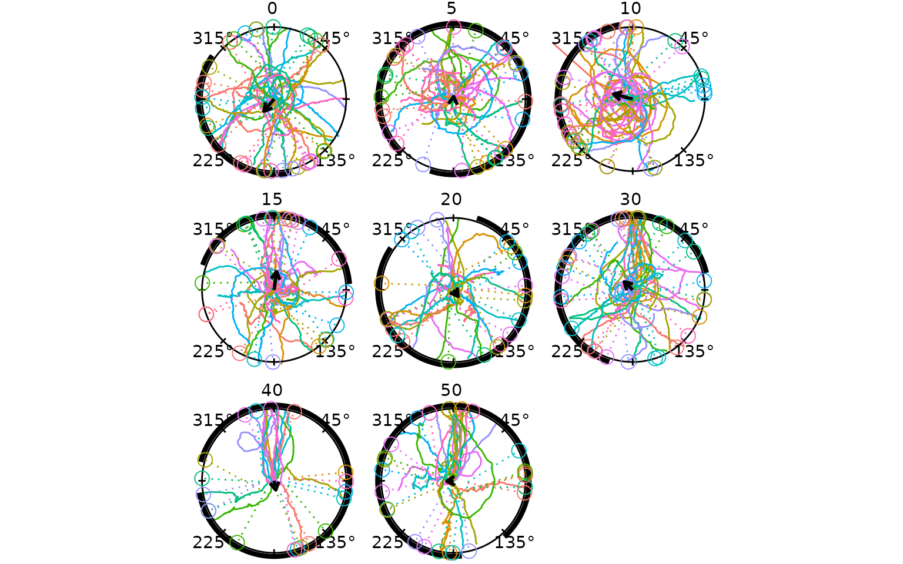
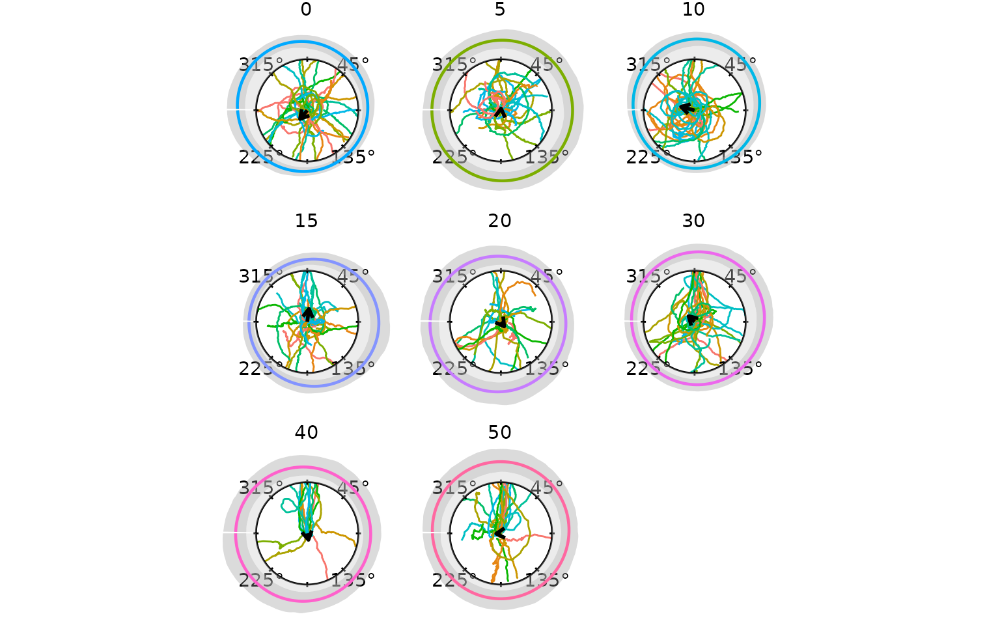
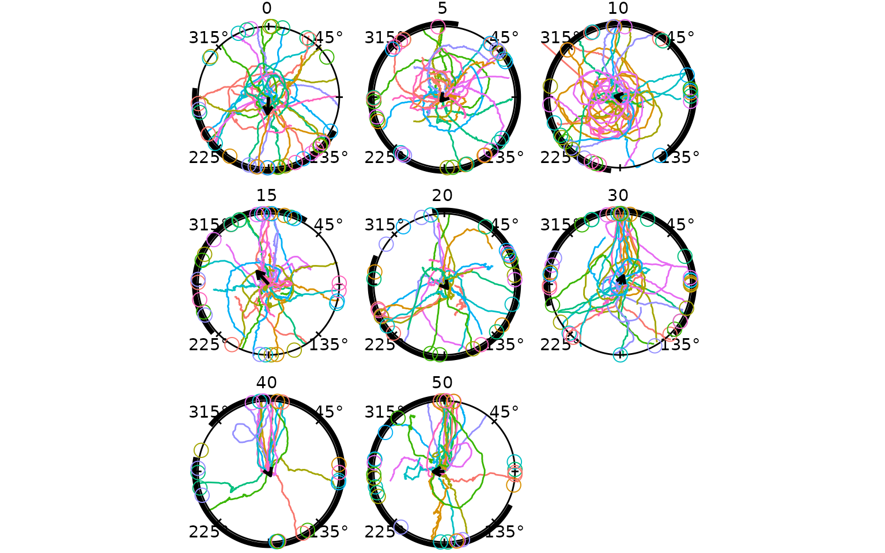
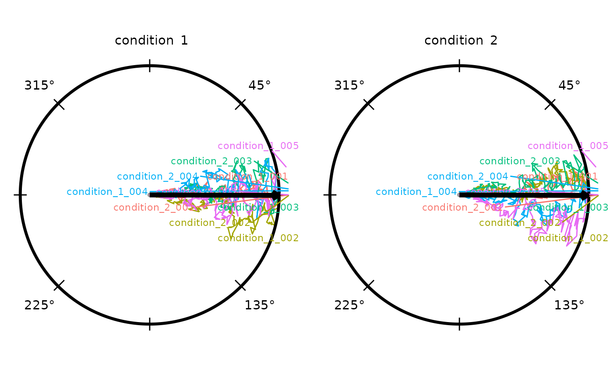

if (requireNamespace("pkgload", quietly = TRUE)) {
# Always load from source so the vignette reflects the current development state.
pkgload::load_all("..", export_all = FALSE, helpers = FALSE, quiet = TRUE)
} else if (requireNamespace("radiatR", quietly = TRUE)) {
library(radiatR)
} else {
stop("Package 'radiatR' not installed and 'pkgload' not available.")
}
library(ggplot2)Overview
radiatR streamlines the journey from raw tracking files
to publication-ready plots for experiments conducted in circular arenas.
The package includes:
- utilities for importing paired landmark/track text files produced by popular tracking suites;
- helpers for extracting trial limits and computing circular summary statistics;
- polished
ggplot2layers for drawing concentric guides and annotated paths.
Import Pipeline
The package ships the full set of millipede example tracks that
demonstrate the import workflow. Landmark files
(_point01.txt) record two pixel-space reference points per
trial (arena centre and target location on the arena wall); track files
(_point02.txt) contain the full xy trajectory.
track_dir <- system.file("extdata", "tracks", package = "radiatR")
manifest_path <- system.file("extdata", "millipede_trials.csv", package = "radiatR")
file_tbl <- import_tracks(track_dir)
manifest <- import_info(manifest_path)
file_tbl <- load_tracks(file_tbl, manifest, track_dir)
#> Warning in .augment_with_manifest(file_tbl, df, manifest_cols): Entries in
#> `file_tbl` with no matching metadata: con_19
#> Warning in .augment_with_manifest(file_tbl, df, manifest_cols): Rows in
#> `manifest` with no corresponding track: con_101, con_102, con_104, con_105,
#> con_108, con_109, con_110, con_112, con_116, con_117, con_119, con_120,
#> con_121, 5_101, 5_102, 5_103, 5_104, 5_108, 5_110, 5_117, 5_118, 5_119, 5_121,
#> 10_101, 10_102, 10_105, 10_107, 10_108, 10_109, 10_110, 10_111, 10_112, 10_113,
#> 10_114, 10_116, 10_117, 10_119, 10_121, 15_101, 15_102, 15_104, 15_105, 15_107,
#> 15_109, 15_110, 15_112, 15_116, 15_119, 15_120, 15_121, 20_101, 20_102, 20_103,
#> 20_104, 20_105, 20_106, 20_107, 20_108, 20_109, 20_110, 20_112, 20_116, 20_117,
#> 20_119, 20_121, 30_101, 30_102, 30_104, 30_105, 30_106, 30_107, 30_108, 30_109,
#> 30_113, 30_114, 30_115, 30_116, 30_117, 30_119, 30_121, 40_101, 40_102, 40_103,
#> 40_104, 40_105, 40_107, 40_108, 40_109, 40_110, 40_112, 40_118, 40_119, 40_121,
#> 50_12, 50_34, 50_101, 50_104, 50_105, 50_107, 50_108, 50_109, 50_110, 50_112,
#> 50_113, 50_119, 50_121
ts_demo <- suppressWarnings(get_all_object_pos(file_tbl = file_tbl, track_dir = track_dir))
#> 1 point across 1 trial exceeded the arena boundary (radius > 1); coordinates left unscaled.
#> 4 points across 1 trial exceeded the arena boundary (radius > 1); coordinates left unscaled.
#> 2 points across 1 trial exceeded the arena boundary (radius > 1); coordinates left unscaled.
#> 4 points across 1 trial exceeded the arena boundary (radius > 1); coordinates left unscaled.
#> 2 points across 1 trial exceeded the arena boundary (radius > 1); coordinates left unscaled.
#> 4 points across 1 trial exceeded the arena boundary (radius > 1); coordinates left unscaled.
#> 11 points across 1 trial exceeded the arena boundary (radius > 1); coordinates left unscaled.
#> 2 points across 1 trial exceeded the arena boundary (radius > 1); coordinates left unscaled.
#> 2 points across 1 trial exceeded the arena boundary (radius > 1); coordinates left unscaled.
#> 1 point across 1 trial exceeded the arena boundary (radius > 1); coordinates left unscaled.
#> 3 points across 1 trial exceeded the arena boundary (radius > 1); coordinates left unscaled.
#> 4 points across 1 trial exceeded the arena boundary (radius > 1); coordinates left unscaled.
#> 3 points across 1 trial exceeded the arena boundary (radius > 1); coordinates left unscaled.
#> 6 points across 1 trial exceeded the arena boundary (radius > 1); coordinates left unscaled.
#> 4 points across 1 trial exceeded the arena boundary (radius > 1); coordinates left unscaled.
#> 6 points across 1 trial exceeded the arena boundary (radius > 1); coordinates left unscaled.
#> 3 points across 1 trial exceeded the arena boundary (radius > 1); coordinates left unscaled.
#> 2 points across 1 trial exceeded the arena boundary (radius > 1); coordinates left unscaled.
#> 6 points across 1 trial exceeded the arena boundary (radius > 1); coordinates left unscaled.
#> 5 points across 1 trial exceeded the arena boundary (radius > 1); coordinates left unscaled.
#> 2 points across 1 trial exceeded the arena boundary (radius > 1); coordinates left unscaled.
#> 2 points across 1 trial exceeded the arena boundary (radius > 1); coordinates left unscaled.
#> 5 points across 1 trial exceeded the arena boundary (radius > 1); coordinates left unscaled.
#> 2 points across 1 trial exceeded the arena boundary (radius > 1); coordinates left unscaled.
#> 4 points across 1 trial exceeded the arena boundary (radius > 1); coordinates left unscaled.
#> 1 point across 1 trial exceeded the arena boundary (radius > 1); coordinates left unscaled.
#> 9 points across 1 trial exceeded the arena boundary (radius > 1); coordinates left unscaled.
#> 6 points across 1 trial exceeded the arena boundary (radius > 1); coordinates left unscaled.
#> 10 points across 1 trial exceeded the arena boundary (radius > 1); coordinates left unscaled.
#> 3 points across 1 trial exceeded the arena boundary (radius > 1); coordinates left unscaled.
#> 9 points across 1 trial exceeded the arena boundary (radius > 1); coordinates left unscaled.
#> 2 points across 1 trial exceeded the arena boundary (radius > 1); coordinates left unscaled.
#> 3 points across 1 trial exceeded the arena boundary (radius > 1); coordinates left unscaled.
#> 8 points across 1 trial exceeded the arena boundary (radius > 1); coordinates left unscaled.
#> 6 points across 1 trial exceeded the arena boundary (radius > 1); coordinates left unscaled.
#> 3 points across 1 trial exceeded the arena boundary (radius > 1); coordinates left unscaled.
#> 2 points across 1 trial exceeded the arena boundary (radius > 1); coordinates left unscaled.
#> 3 points across 1 trial exceeded the arena boundary (radius > 1); coordinates left unscaled.
#> 3 points across 1 trial exceeded the arena boundary (radius > 1); coordinates left unscaled.
#> 4 points across 1 trial exceeded the arena boundary (radius > 1); coordinates left unscaled.
#> 6 points across 1 trial exceeded the arena boundary (radius > 1); coordinates left unscaled.
#> 2 points across 1 trial exceeded the arena boundary (radius > 1); coordinates left unscaled.
#> 3 points across 1 trial exceeded the arena boundary (radius > 1); coordinates left unscaled.
#> 5 points across 1 trial exceeded the arena boundary (radius > 1); coordinates left unscaled.
#> 3 points across 1 trial exceeded the arena boundary (radius > 1); coordinates left unscaled.
#> 6 points across 1 trial exceeded the arena boundary (radius > 1); coordinates left unscaled.
#> 1 point across 1 trial exceeded the arena boundary (radius > 1); coordinates left unscaled.
#> 8 points across 1 trial exceeded the arena boundary (radius > 1); coordinates left unscaled.
#> 2 points across 1 trial exceeded the arena boundary (radius > 1); coordinates left unscaled.
#> 2 points across 1 trial exceeded the arena boundary (radius > 1); coordinates left unscaled.
#> 2 points across 1 trial exceeded the arena boundary (radius > 1); coordinates left unscaled.
#> 2 points across 1 trial exceeded the arena boundary (radius > 1); coordinates left unscaled.
#> 2 points across 1 trial exceeded the arena boundary (radius > 1); coordinates left unscaled.
#> 8 points across 1 trial exceeded the arena boundary (radius > 1); coordinates left unscaled.
#> 5 points across 1 trial exceeded the arena boundary (radius > 1); coordinates left unscaled.
#> 2 points across 1 trial exceeded the arena boundary (radius > 1); coordinates left unscaled.
#> 2 points across 1 trial exceeded the arena boundary (radius > 1); coordinates left unscaled.
#> 2 points across 1 trial exceeded the arena boundary (radius > 1); coordinates left unscaled.
#> 4 points across 1 trial exceeded the arena boundary (radius > 1); coordinates left unscaled.
#> 8 points across 1 trial exceeded the arena boundary (radius > 1); coordinates left unscaled.
#> 2 points across 1 trial exceeded the arena boundary (radius > 1); coordinates left unscaled.
#> 4 points across 1 trial exceeded the arena boundary (radius > 1); coordinates left unscaled.
#> 4 points across 1 trial exceeded the arena boundary (radius > 1); coordinates left unscaled.
#> 6 points across 1 trial exceeded the arena boundary (radius > 1); coordinates left unscaled.
#> 2 points across 1 trial exceeded the arena boundary (radius > 1); coordinates left unscaled.
#> 7 points across 1 trial exceeded the arena boundary (radius > 1); coordinates left unscaled.
#> 23 points across 1 trial exceeded the arena boundary (radius > 1); coordinates left unscaled.
#> 11 points across 1 trial exceeded the arena boundary (radius > 1); coordinates left unscaled.
#> 3 points across 1 trial exceeded the arena boundary (radius > 1); coordinates left unscaled.
#> 6 points across 1 trial exceeded the arena boundary (radius > 1); coordinates left unscaled.
#> 2 points across 1 trial exceeded the arena boundary (radius > 1); coordinates left unscaled.
#> 8 points across 1 trial exceeded the arena boundary (radius > 1); coordinates left unscaled.
#> 3 points across 1 trial exceeded the arena boundary (radius > 1); coordinates left unscaled.
#> 7 points across 1 trial exceeded the arena boundary (radius > 1); coordinates left unscaled.
#> 4 points across 1 trial exceeded the arena boundary (radius > 1); coordinates left unscaled.
#> 4 points across 1 trial exceeded the arena boundary (radius > 1); coordinates left unscaled.
#> 2 points across 1 trial exceeded the arena boundary (radius > 1); coordinates left unscaled.
#> 1 point across 1 trial exceeded the arena boundary (radius > 1); coordinates left unscaled.
#> 10 points across 1 trial exceeded the arena boundary (radius > 1); coordinates left unscaled.
#> 1 point across 1 trial exceeded the arena boundary (radius > 1); coordinates left unscaled.
#> 4 points across 1 trial exceeded the arena boundary (radius > 1); coordinates left unscaled.
#> 1 point across 1 trial exceeded the arena boundary (radius > 1); coordinates left unscaled.
#> 3 points across 1 trial exceeded the arena boundary (radius > 1); coordinates left unscaled.
#> 2 points across 1 trial exceeded the arena boundary (radius > 1); coordinates left unscaled.
#> 4 points across 1 trial exceeded the arena boundary (radius > 1); coordinates left unscaled.
#> 6 points across 1 trial exceeded the arena boundary (radius > 1); coordinates left unscaled.
#> 2 points across 1 trial exceeded the arena boundary (radius > 1); coordinates left unscaled.
#> 3 points across 1 trial exceeded the arena boundary (radius > 1); coordinates left unscaled.
#> 2 points across 1 trial exceeded the arena boundary (radius > 1); coordinates left unscaled.
#> 7 points across 1 trial exceeded the arena boundary (radius > 1); coordinates left unscaled.
#> 11 points across 1 trial exceeded the arena boundary (radius > 1); coordinates left unscaled.
#> 6 points across 1 trial exceeded the arena boundary (radius > 1); coordinates left unscaled.
#> 6 points across 1 trial exceeded the arena boundary (radius > 1); coordinates left unscaled.
#> 19 points across 1 trial exceeded the arena boundary (radius > 1); coordinates left unscaled.
#> 2 points across 1 trial exceeded the arena boundary (radius > 1); coordinates left unscaled.
#> 6 points across 1 trial exceeded the arena boundary (radius > 1); coordinates left unscaled.
#> 9 points across 1 trial exceeded the arena boundary (radius > 1); coordinates left unscaled.
#> 4 points across 1 trial exceeded the arena boundary (radius > 1); coordinates left unscaled.
#> 3 points across 1 trial exceeded the arena boundary (radius > 1); coordinates left unscaled.
#> 6 points across 1 trial exceeded the arena boundary (radius > 1); coordinates left unscaled.
#> 2 points across 1 trial exceeded the arena boundary (radius > 1); coordinates left unscaled.
#> 3 points across 1 trial exceeded the arena boundary (radius > 1); coordinates left unscaled.
#> 6 points across 1 trial exceeded the arena boundary (radius > 1); coordinates left unscaled.
#> 3 points across 1 trial exceeded the arena boundary (radius > 1); coordinates left unscaled.
#> 9 points across 1 trial exceeded the arena boundary (radius > 1); coordinates left unscaled.
#> 2 points across 1 trial exceeded the arena boundary (radius > 1); coordinates left unscaled.
ts_demo
#> TrajSet: 235 trajectories, 44331 observations
#> Columns: id='trial_id', time='frame', angle='rel_theta' (radians), x='trans_x', y='trans_y', rel_x='rel_x', rel_y='rel_y'
#> Transform steps: unit_circle_mapping
#> # A tibble: 6 × 15
#> trial_id frame x y trans_x trans_y trans_rho abs_theta rel_theta
#> <chr> <int> <dbl> <dbl> <dbl> <dbl> <dbl> <dbl> <dbl>
#> 1 10_1_1 1 456. 372. 0.00511 0 0.00511 0 6.21
#> 2 10_1_1 2 458. 370. 0.0128 0.00770 0.0149 0.541 0.464
#> 3 10_1_1 3 456. 370. 0.00511 0.00770 0.00924 0.985 0.908
#> 4 10_1_1 4 454. 370. 0 0.00770 0.00770 1.57 1.49
#> 5 10_1_1 5 456. 377. 0.00511 -0.0153 0.0162 5.03 4.96
#> 6 10_1_1 6 459. 382. 0.0154 -0.0307 0.0343 5.18 5.10
#> # ℹ 6 more variables: rel_x <dbl>, rel_y <dbl>, video <chr>, order <chr>,
#> # vid_ord <chr>, radius <dbl>get_all_object_pos() reads each landmark/track pair,
normalises coordinates to a unit circle (arena radius = 1), and returns
a TrajSet. Trial metadata (arena radius, target position,
frame limits) is in ts_demo@meta$trial_limits.
Full Millipede Dataset
The package also provides cpunctatus, a pre-computed
TrajSet of all 235 Cylindroiulus punctatus
trajectories across the stimulus conditions (target half-widths of 5,
10, 15, 20, 30, 40, 50 degrees, plus a featureless control with
arc = 0). Loading it is instant, and the per-trial target
half-width is already attached as the arc column.
data(cpunctatus)
cpunctatus
#> TrajSet: 235 trajectories, 44331 observations
#> Columns: id='trial_id', time='frame', angle='rel_theta' (radians), x='trans_x', y='trans_y', rel_x='rel_x', rel_y='rel_y'
#> Transform steps: unit_circle_mapping
#> # A tibble: 6 × 18
#> trial_id frame x y trans_x trans_y trans_rho abs_theta rel_theta
#> <chr> <int> <dbl> <dbl> <dbl> <dbl> <dbl> <dbl> <dbl>
#> 1 10_1_1 1 456. 372. 0.00511 0 0.00511 0 6.21
#> 2 10_1_1 2 458. 370. 0.0128 0.00770 0.0149 0.541 0.464
#> 3 10_1_1 3 456. 370. 0.00511 0.00770 0.00924 0.985 0.908
#> 4 10_1_1 4 454. 370. 0 0.00770 0.00770 1.57 1.49
#> 5 10_1_1 5 456. 377. 0.00511 -0.0153 0.0162 5.03 4.96
#> 6 10_1_1 6 459. 382. 0.0154 -0.0307 0.0343 5.18 5.10
#> # ℹ 9 more variables: rel_x <dbl>, rel_y <dbl>, video <chr>, order <chr>,
#> # vid_ord <chr>, radius <dbl>, arc <ord>, type <chr>, individual <chr>Plotting Trajectories
radiate() draws trajectories on a unit circle with
concentric reference rings. Colouring by the arc factor
shows how paths cluster by condition.
radiate(cpunctatus,
group_col = "trial_id",
colour_col = "arc",
show_labels = FALSE,
show_arrow = FALSE,
display = circ_display(zero = 0))
Heading Overlays
The crossing method — projecting the vector between
two concentric-ring crossings to the unit circle — assigns one
directional heading per trial. derive_headings() with
return_coords = TRUE returns both the heading angle and the
inner-ring crossing position.
hd <- derive_headings(cpunctatus, rule = "crossing",
circ0 = 0.2, circ1 = 0.4,
return_coords = TRUE)
names(hd)[names(hd) == "id"] <- "trial_id"
# join the target half-width (arc) from the dataset for grouping/faceting
arc_map <- unique(cpunctatus@data[, c("trial_id", "arc")])
hd <- merge(hd, arc_map, by = "trial_id")
hd$arc <- factor(hd$arc)
attr(hd, "colour_col") <- "arc"
attr(hd, "display") <- circ_display(zero = 0)
head(hd[, c("trial_id", "arc", "heading", "x_inner", "y_inner")])
#> trial_id arc heading x_inner y_inner
#> 1 10_1_1 10 0.3545811 0.19556350 -0.04102813
#> 2 10_10_1 10 6.2337825 -0.03715972 0.19558015
#> 3 10_11_1 10 1.3353505 -0.07231344 0.18624466
#> 4 10_12_1 10 2.2846471 -0.18291981 0.08084798
#> 5 10_13_1 10 5.6521348 0.18223038 0.08232129
#> 6 10_14_1 10 1.6589765 0.09025066 0.17836615Overlaying the heading endpoints (one hollow circle per trial) and the grand mean direction on the combined trajectory plot gives a compact summary of the full dataset:
p_all <- radiate(cpunctatus,
group_col = "trial_id",
colour_col = "arc",
show_labels = FALSE,
show_arrow = FALSE,
display = circ_display(zero = 0)) +
add_heading_points(hd, colour_col = "arc", size = 1, alpha = 0.6)
p_all + add_heading_arrow(hd)
#> Warning: Removed 25 rows containing missing values or values outside the scale range
#> (`geom_point()`).
The grand mean arrow points at 283.2° relative to the reference direction (clock convention; 0° = toward reference) with R = 0.08, reflecting the overall reference-relative tendency across all conditions.
Circular Interval Arc
Three functions handle directional uncertainty arcs in parallel with the density overlay functions:
| Function | Role |
|---|---|
compute_circ_interval() |
Computes arc bounds from raw headings; returns a data frame with
lower, upper, mean_dir, and
wraps
|
add_circ_interval() |
Renders any bounds data frame as an arc at a configurable radius — agnostic to how the bounds were produced |
add_heading_interval() |
Convenience wrapper: calls the two above in sequence |
Two statistics are supported: stat = "bootstrap_ci"
bootstraps the von Mises MLE confidence interval for the mean direction;
stat = "sd" draws a ±1 circular SD arc. The split design
lets you substitute Bayesian credible bounds into the data frame before
rendering:
iv <- compute_circ_interval(hd, colour_col = "arc", stat = "bootstrap_ci")
# replace with Bayesian posteriors: iv$lower <- ...; iv$upper <- ...
add_circ_interval(iv, colour_col = "arc")Building Up a Panel
Layers compose with the standard ggplot2 +
operator, so a plot can be assembled feature by feature. The four chunks
below start from trajectories only and add heading endpoints, the grand
mean arrow, and finally a bootstrap CI arc.
Trajectories:
p <- radiate(cpunctatus,
group_col = "trial_id",
colour_col = "arc",
show_labels = FALSE,
show_arrow = FALSE,
display = circ_display(zero = 0))
p
+ Heading endpoints at each trial’s crossing location:
p <- p + add_heading_points(hd, colour_col = "arc", size = 1.5, alpha = 0.7)
p
#> Warning: Removed 25 rows containing missing values or values outside the scale range
#> (`geom_point()`).+ Grand mean direction arrow:
p <- p + add_heading_arrow(hd)
p
#> Warning: Removed 25 rows containing missing values or values outside the scale range
#> (`geom_point()`).The arc at radius 1.05 spans the 95 % bootstrap confidence interval for the grand mean direction pooled across all arc conditions.
Colour Options
Three strategies control how trajectories are coloured.
Option 1 — single colour. Pass a colour string
directly to the heading-overlay helpers; omit colour_col
from radiate() to draw all tracks in the default grey.
Option 2 — cycling palette.
colour_cycle assigns each trajectory a colour index that
cycles back to 1 after every n trajectories. When
panel_by is set the cycle restarts independently within
each panel so that trajectory 1 in every panel always gets colour 1.
Pass an integer for automatic palette assignment, or a character vector
to specify colours explicitly.
Option 3 — variable mapping. colour_col
maps any data column to colour (e.g. the arc factor used in
the combined-trajectory plot above).
Per-Condition Panels
Faceting by arc angle shows each condition separately. Within each
panel, assign_cycle_colours() distinguishes individual
trajectories by cycling through 10 colours, resetting at each panel
boundary. Calling it explicitly on both the track data and the headings
data frame (joining by trial id) means heading markers inherit the exact
per-trajectory colour — not a single per-condition colour — when
colour_col is used for both.
# Pre-compute cycling colours: 10 colours, restarting within each arc panel.
# Join to headings so heading layers can use the same column.
cpunctatus_cc <- cpunctatus
cpunctatus_cc@data <- assign_cycle_colours(cpunctatus@data,
id_col = "trial_id",
n = 10,
panel_col = "arc")
colour_map <- unique(cpunctatus_cc@data[, c("trial_id", "cycle_colour")])
hd_cc <- merge(hd, colour_map,
by = "trial_id", all.x = TRUE)
attr(hd_cc, "display") <- attr(hd, "display", exact = TRUE)
attr(hd_cc, "colour_col") <- "cycle_colour"
p <- radiate(cpunctatus_cc,
group_col = "trial_id",
colour_col = "cycle_colour",
panel_by = "arc",
ncol = 3,
show_labels = FALSE,
show_arrow = FALSE,
display = circ_display(zero = 0))
p
+ Bootstrap CI arc added first so it sits behind heading markers:
p <- p + add_heading_interval(hd_cc, colour_col = "arc", colour = "black",
stat = "bootstrap_ci", boot_reps = 999L)
p
+ Heading vectors (dotted lines from inner crossing to perimeter):
p <- p + add_heading_vectors(hd_cc)
p
#> Warning: Removed 25 rows containing missing values or values outside the scale range
#> (`geom_segment()`).
+ Heading points on top of the CI arc:
p <- p + add_heading_points(hd_cc, size = 4)
p
#> Warning: Removed 25 rows containing missing values or values outside the scale range
#> (`geom_segment()`).
#> Warning: Removed 25 rows containing missing values or values outside the scale range
#> (`geom_point()`).
p <- p + add_heading_arrow(hd_cc, colour_col = "arc", colour = "black")
p
#> Warning: Removed 25 rows containing missing values or values outside the scale range
#> (`geom_segment()`).
#> Warning: Removed 25 rows containing missing values or values outside the scale range
#> (`geom_point()`).
Each panel shows trajectories and heading markers coloured by
per-trajectory cycling palette, a bootstrap CI arc at radius 1.05 in the
condition colour (rendered behind the heading points), a solid mean
direction arrow, and degree labels. All in clock convention (0° = toward
reference, clockwise). Use strip_position = "inside" to
place the label inside the plot area, or
strip_labels = FALSE to suppress it.
Circular Density Overlays
Three functions handle directional density overlays; they are designed to compose cleanly with any density source:
| Function | Role |
|---|---|
compute_circular_density() |
Estimates density from raw headings; returns a plain data frame of
(theta, density) pairs |
add_circular_density() |
Renders any (theta, density) data frame as a radial
overlay — agnostic to how the density was produced |
add_heading_density() |
Convenience wrapper: calls the two above in sequence |
Three built-in methods are available in
compute_circular_density(): "vonmises" (MLE
via circular::mle.vonmises()), "kernel"
(circular KDE), and "histogram" (bin counts). Because the
computation and rendering steps are separate, the density
column can be replaced with values from any other model — including a
Bayesian posterior predictive density from brms — before
calling add_circular_density():
dens_df <- compute_circular_density(hd, colour_col = "arc", method = "vonmises")
# replace with Bayesian posterior: dens_df$density <- my_brms_fitted_density(dens_df$theta)
add_circular_density(dens_df, colour_col = "arc", fill = "grey80", alpha = 0.35)The convenience wrapper add_heading_density() skips the
intermediate step when no substitution is needed. The combined panel
plot below uses it to shade a per-condition von Mises density alongside
the heading vectors:
radiate(cpunctatus_cc,
group_col = "trial_id",
colour_col = "cycle_colour",
panel_by = "arc",
ncol = 3,
show_labels = FALSE,
show_arrow = FALSE,
display = circ_display(zero = 0)) +
add_heading_density(hd_cc, colour_col = "arc",
method = "vonmises", scale = 0.4,
fill = "grey80", alpha = 0.35) +
add_heading_vectors(hd_cc) +
add_heading_arrow(hd_cc, colour_col = "arc", colour = "black")
#> Warning: Removed 25 rows containing missing values or values outside the scale range
#> (`geom_segment()`).
The shaded region is the von Mises density fitted to the crossing
headings within each arc condition. A narrower, taller peak indicates
more concentrated directional responses. Switch to
method = "kernel" for a non-parametric estimate, or
method = "histogram" for a raw count display.
Bootstrap Confidence Band
compute_circular_density() with
boot_reps > 0 runs a non-parametric bootstrap: heading
samples are drawn with replacement, a von Mises MLE is fitted to each
replicate, and the density is re-evaluated on the same angular grid. The
boot_alpha / 2 and 1 - boot_alpha / 2
quantiles across replicates become density_lower and
density_upper columns, which
add_circular_density() renders as a shaded band around the
fitted curve.
dens_boot <- compute_circular_density(hd, colour_col = "arc",
method = "vonmises",
boot_reps = 499L, boot_alpha = 0.05,
n_theta = 300L)
radiate(cpunctatus,
group_col = "trial_id",
colour_cycle = 10,
panel_by = "arc",
ncol = 3,
show_labels = FALSE,
show_arrow = FALSE,
display = circ_display(zero = 0)) +
add_circular_density(dens_boot, colour_col = "arc",
scale = 0.4, fill = "grey80", alpha = 0.35,
ci_fill = "grey60", ci_alpha = 0.35) +
add_heading_arrow(hd, colour_col = "arc", colour = "black")
The darker band is the 95% bootstrap confidence interval for the
fitted von Mises density. A wider band reflects greater parametric
uncertainty, typically seen in the smaller or more diffuse conditions.
The density_lower and density_upper columns in
dens_boot can be replaced with interval values from a
Bayesian model (e.g. the 2.5th and 97.5th percentiles of a
brms posterior predictive distribution) before passing to
add_circular_density().
Circular Summary Statistics
compute_circ_mean() returns the per-condition statistics
behind the arrows above:
compute_circ_mean(hd, colour_col = "arc")[, c("arc", "mean_dir", "resultant_R")]
#> arc mean_dir resultant_R
#> 1 0 2.4441971 0.21852376
#> 2 5 6.1710354 0.03518184
#> 3 10 1.3122762 0.27298867
#> 4 15 6.1535219 0.25745294
#> 5 20 3.7683984 0.10968390
#> 6 30 0.8051961 0.16285026
#> 7 40 3.3258479 0.12904693
#> 8 50 1.6405047 0.09148952For within-trial path consistency (tortuosity),
circ_summary() operates on the step-by-step angle
distribution:
circ_summary(ts_demo)
#> id n t_start t_end mean_dir resultant_R kappa
#> 1 10_1_1 81 1 81 0.11601277 0.83986765 NA
#> 2 10_10_1 299 1 299 2.27816423 0.15483083 NA
#> 3 10_11_1 65 14 78 0.25433201 0.66719920 NA
#> 4 10_12_1 48 2 49 2.30699848 0.90377927 NA
#> 5 10_13_1 80 22 101 0.96510683 0.53748429 NA
#> 6 10_14_1 30 1 30 4.76335993 0.97186701 NA
#> 7 10_15_1 54 2 55 3.52077381 0.93703586 NA
#> 8 10_16_1 78 2 79 3.07994139 0.75350741 NA
#> 9 10_17_1 47 1 47 3.57548520 0.96788712 NA
#> 10 10_19_1 282 18 299 1.95265552 0.37352800 NA
#> 11 10_2_1 48 1 48 2.38407618 0.92287205 NA
#> 12 10_20_1 257 35 291 3.28735826 0.06865973 NA
#> 13 10_23_1 285 15 299 3.17651959 0.95049488 NA
#> 14 10_24_1 299 1 299 4.41001073 0.99114749 NA
#> 15 10_26_1 297 3 299 0.56922008 0.98833710 NA
#> 16 10_27_1 287 13 299 1.27801742 0.17608487 NA
#> 17 10_28_1 70 1 70 0.24722515 0.99017916 NA
#> 18 10_29_1 160 33 192 5.88168170 0.89922506 NA
#> 19 10_3_1 113 1 113 2.82658773 0.36596253 NA
#> 20 10_33_1 292 8 299 2.63078292 0.99680196 NA
#> 21 10_35_1 285 15 299 3.71725585 0.98345748 NA
#> 22 10_39_1 209 8 216 1.74020125 0.87543282 NA
#> 23 10_41_1 246 54 299 4.40674054 0.66683690 NA
#> 24 10_45_1 297 3 299 1.94073553 0.96305715 NA
#> 25 10_5_1 60 2 61 1.94603101 0.71894766 NA
#> 26 10_6_1 91 1 91 5.38407117 0.73923539 NA
#> 27 10_7_1 56 1 56 3.03029422 0.81454694 NA
#> 28 10_8_1 87 1 87 0.28440324 0.98625686 NA
#> 29 10_9_1 299 1 299 1.28909699 0.44454476 NA
#> 30 15_10_1 299 1 299 2.55980784 0.94235363 NA
#> 31 15_11_1 299 1 299 6.22819541 0.99982898 NA
#> 32 15_13_1 86 1 86 2.34142569 0.97038308 NA
#> 33 15_14_1 299 1 299 4.50120997 0.96268696 NA
#> 34 15_16_1 299 1 299 2.22838041 0.05176624 NA
#> 35 15_19_1 136 1 136 1.49830203 0.97451676 NA
#> 36 15_2_1 298 2 299 3.78567731 0.56143361 NA
#> 37 15_21_1 299 1 299 0.30348015 0.99696169 NA
#> 38 15_23_1 299 1 299 5.46169359 0.50809640 NA
#> 39 15_24_1 299 1 299 6.01136043 0.99737845 NA
#> 40 15_25_1 201 15 215 3.49231678 0.24577237 NA
#> 41 15_26_1 180 4 183 4.59130526 0.99325588 NA
#> 42 15_27_1 299 1 299 3.27544567 0.51244674 NA
#> 43 15_28_1 205 1 205 2.51823083 0.94955008 NA
#> 44 15_29_1 181 1 181 1.40296402 0.30838298 NA
#> 45 15_3_1 263 20 282 4.14828843 0.90299967 NA
#> 46 15_30_1 280 1 280 2.98748265 0.99798753 NA
#> 47 15_32_1 299 1 299 5.96415656 0.98966372 NA
#> 48 15_35_1 233 1 233 0.20853032 0.78788735 NA
#> 49 15_36_1 299 1 299 2.77136926 0.47808052 NA
#> 50 15_41_1 192 6 197 0.45932573 0.94218791 NA
#> 51 15_42_1 92 1 92 3.50831648 0.97564825 NA
#> 52 15_44_1 225 7 231 3.10874826 0.32496901 NA
#> 53 15_47_1 225 1 225 0.17240450 0.99548491 NA
#> 54 15_48_1 225 1 225 0.18326845 0.99518116 NA
#> 55 15_49_1 299 1 299 1.67764329 0.99937551 NA
#> 56 15_50_1 299 1 299 1.07588619 0.42856981 NA
#> 57 15_51_1 181 1 181 6.13306449 0.99791415 NA
#> 58 15_7_1 175 3 177 0.24885314 0.98512977 NA
#> 59 15_9_1 279 3 281 5.14054126 0.72395950 NA
#> 60 20_10_1 299 1 299 3.90847302 0.95728614 NA
#> 61 20_11_1 284 8 291 5.65755647 0.77852741 NA
#> 62 20_13_1 287 2 288 4.01880340 0.62800624 NA
#> 63 20_14_1 135 1 135 0.25507384 0.97496332 NA
#> 64 20_16_1 216 8 223 5.39642116 0.92479381 NA
#> 65 20_18_1 283 2 284 5.04291139 0.71006271 NA
#> 66 20_19_1 78 21 98 1.79807786 0.97876779 NA
#> 67 20_2_1 227 1 227 1.51703975 0.89133744 NA
#> 68 20_20_1 85 1 85 2.68502012 0.75287781 NA
#> 69 20_22_1 299 1 299 0.18918312 0.97859808 NA
#> 70 20_24_1 299 1 299 4.19233539 0.97193537 NA
#> 71 20_26_1 274 7 280 3.01169447 0.50723092 NA
#> 72 20_27_1 84 10 93 2.90554888 0.65560451 NA
#> 73 20_28_1 246 5 250 2.64039413 0.94119258 NA
#> 74 20_29_1 41 59 99 0.92989363 0.95902177 NA
#> 75 20_3_1 241 43 283 4.13256041 0.62193439 NA
#> 76 20_30_1 299 1 299 4.06111336 0.99762883 NA
#> 77 20_33_1 105 40 144 0.42291825 0.95171682 NA
#> 78 20_35_1 299 1 299 0.06807526 0.99863680 NA
#> 79 20_36_1 274 1 274 0.95650996 0.51392567 NA
#> 80 20_39_1 71 81 151 2.29183469 0.93249560 NA
#> 81 20_41_1 202 50 251 6.19127720 0.96381695 NA
#> 82 20_47_1 120 62 181 5.04036796 0.31089917 NA
#> 83 20_48_1 110 16 125 3.55333429 0.91803621 NA
#> 84 20_5_1 269 31 299 0.51898415 0.92700037 NA
#> 85 20_7_1 297 3 299 2.59039500 0.94274263 NA
#> 86 20_9_1 299 1 299 5.16322703 0.99372483 NA
#> 87 30_1_1 73 20 92 3.39275362 0.90071602 NA
#> 88 30_10_1 38 1 38 6.07733907 0.99087223 NA
#> 89 30_11_1 60 1 60 4.20293090 0.93157618 NA
#> 90 30_12_1 52 7 58 3.29319603 0.96586000 NA
#> 91 30_13_1 50 35 84 4.62774407 0.93530935 NA
#> 92 30_14_1 34 1 34 2.06777042 0.99308649 NA
#> 93 30_15_1 41 1 41 6.13222047 0.98975264 NA
#> 94 30_16_1 50 1 50 4.01534137 0.94753425 NA
#> 95 30_17_1 51 1 51 5.36276056 0.89836243 NA
#> 96 30_18_1 284 16 299 2.28433577 0.99345023 NA
#> 97 30_19_1 71 16 86 2.73210591 0.90590373 NA
#> 98 30_2_1 73 12 84 5.47578231 0.39447530 NA
#> 99 30_20_1 129 6 134 1.77295330 0.40866735 NA
#> 100 30_24_1 299 1 299 5.43793062 0.99482668 NA
#> 101 30_26_1 177 1 177 3.40104741 0.96939648 NA
#> 102 30_27_1 216 27 242 5.61946327 0.67400152 NA
#> 103 30_28_1 139 19 157 0.03150473 0.97900913 NA
#> 104 30_29_1 200 53 252 3.00899101 0.96466914 NA
#> 105 30_3_1 56 7 62 4.99839006 0.70272866 NA
#> 106 30_30_1 178 1 178 0.38647092 0.98072191 NA
#> 107 30_32_1 182 72 253 0.03134930 0.81603080 NA
#> 108 30_33_1 138 13 150 6.02909798 0.97977956 NA
#> 109 30_36_1 299 1 299 4.44004481 0.99022264 NA
#> 110 30_39_1 199 44 242 0.72661645 0.90772186 NA
#> 111 30_42_1 58 1 58 2.05768991 0.99873914 NA
#> 112 30_43_1 241 50 290 2.16904391 0.98470451 NA
#> 113 30_44_1 169 26 194 0.64805093 0.73352021 NA
#> 114 30_46_1 273 27 299 2.18430623 0.63729476 NA
#> 115 30_47_1 288 12 299 4.94467482 0.62368005 NA
#> 116 30_49_1 294 6 299 2.20328778 0.87515734 NA
#> 117 30_5_1 53 1 53 5.61673329 0.81208153 NA
#> 118 30_50_1 65 1 65 5.81959476 0.96142054 NA
#> 119 30_51_1 205 9 213 3.44708860 0.05506557 NA
#> 120 30_6_1 48 6 53 5.83079548 0.98006564 NA
#> 121 30_7_1 39 1 39 2.32792086 0.96191934 NA
#> 122 30_8_1 129 1 129 0.68981333 0.35496752 NA
#> 123 30_9_1 90 4 93 6.16244951 0.64077539 NA
#> 124 40_10_1 133 10 142 6.00447436 0.40888368 NA
#> 125 40_11_1 299 1 299 6.11919465 0.99801351 NA
#> 126 40_13_1 191 2 192 5.59272404 0.36390208 NA
#> 127 40_14_1 259 7 265 2.43980261 0.85412471 NA
#> 128 40_16_1 221 31 251 1.98421263 0.95133761 NA
#> 129 40_17_1 104 2 105 6.16532152 0.88894377 NA
#> 130 40_18_1 116 145 260 0.79804169 0.72171201 NA
#> 131 40_19_1 90 9 98 0.26186201 0.98727821 NA
#> 132 40_2_1 118 12 129 6.12041950 0.77375815 NA
#> 133 40_24_1 205 2 206 1.04904279 0.87601778 NA
#> 134 40_26_1 135 10 144 3.71903067 0.80816710 NA
#> 135 40_27_1 138 3 140 0.56835462 0.71555686 NA
#> 136 40_3_1 124 28 151 0.17927597 0.78604298 NA
#> 137 40_30_1 99 3 101 5.81357489 0.96389623 NA
#> 138 40_32_1 96 128 223 0.08177663 0.67625013 NA
#> 139 40_33_1 126 3 128 0.46419774 0.80410230 NA
#> 140 40_49_1 46 2 47 6.17303314 0.99806524 NA
#> 141 40_5_1 94 4 97 0.18349674 0.89185689 NA
#> 142 40_6_1 277 4 280 6.20636421 0.57290195 NA
#> 143 40_7_1 264 36 299 0.10986755 0.99581738 NA
#> 144 5_10_1 201 3 203 1.32889449 0.89693381 NA
#> 145 5_11_1 298 2 299 3.18129611 0.59089708 NA
#> 146 5_12_1 158 2 159 0.39855843 0.94047525 NA
#> 147 5_13_1 191 6 196 0.39832703 0.73418987 NA
#> 148 5_16_1 208 1 208 3.56967734 0.93046175 NA
#> 149 5_17_1 142 1 142 5.65665650 0.99938804 NA
#> 150 5_19_1 208 1 208 1.51114689 0.97325096 NA
#> 151 5_2_1 137 163 299 0.22200488 0.91587458 NA
#> 152 5_21_1 260 1 260 5.07208979 0.98465297 NA
#> 153 5_22_1 297 3 299 0.29515255 0.61239287 NA
#> 154 5_23_1 299 1 299 5.68981823 0.99585195 NA
#> 155 5_25_1 280 20 299 3.93085155 0.39653127 NA
#> 156 5_26_1 296 3 298 6.24589318 0.93833171 NA
#> 157 5_29_1 184 1 184 6.05913072 0.40361072 NA
#> 158 5_3_1 261 2 262 3.82717578 0.79910149 NA
#> 159 5_32_1 299 1 299 2.21265215 0.99370379 NA
#> 160 5_35_1 299 1 299 5.71977087 0.99512318 NA
#> 161 5_36_1 299 1 299 2.27394875 0.98980596 NA
#> 162 5_41_1 105 1 105 5.31642185 0.98211878 NA
#> 163 5_42_1 191 1 191 6.06074139 0.28949964 NA
#> 164 5_44_1 299 1 299 5.98267984 0.94016727 NA
#> 165 5_45_1 299 1 299 5.53354052 0.99502366 NA
#> 166 5_46_1 299 1 299 3.06873896 0.85861001 NA
#> 167 5_47_1 149 1 149 5.96766840 0.95295904 NA
#> 168 5_48_1 274 1 274 3.09024609 0.97820154 NA
#> 169 5_49_1 299 1 299 1.14779301 0.94104956 NA
#> 170 5_5_1 269 31 299 3.51190462 0.31626160 NA
#> 171 5_6_1 256 44 299 0.12235832 0.85720948 NA
#> 172 5_7_1 215 1 215 4.77971702 0.89910205 NA
#> 173 5_8_1 123 1 123 4.22910498 0.98116197 NA
#> 174 5_9_1 299 1 299 1.15330738 0.68674076 NA
#> 175 50_1_1 65 1 65 6.19771559 0.99913654 NA
#> 176 50_10_1 194 4 197 2.28619987 0.87947832 NA
#> 177 50_11_1 256 2 257 6.25526767 0.34406464 NA
#> 178 50_14_1 132 2 133 6.03483957 0.98049111 NA
#> 179 50_16_1 298 2 299 6.25805730 0.88495925 NA
#> 180 50_2_1 62 11 72 3.21592025 0.98097149 NA
#> 181 50_20_1 155 73 227 0.73455550 0.92704569 NA
#> 182 50_22_1 77 54 130 0.34123154 0.98576413 NA
#> 183 50_24_1 282 18 299 1.45208632 0.96835103 NA
#> 184 50_25_1 123 37 159 5.75907144 0.96936065 NA
#> 185 50_26_1 124 19 142 4.35624530 0.94413496 NA
#> 186 50_27_1 130 1 130 3.08946442 0.99090064 NA
#> 187 50_28_1 229 11 239 3.45828698 0.98948172 NA
#> 188 50_29_1 299 1 299 0.66366149 0.98645976 NA
#> 189 50_3_1 125 1 125 0.15990034 0.95491684 NA
#> 190 50_32_1 288 12 299 1.53825754 0.98379715 NA
#> 191 50_33_1 261 1 261 6.05266750 0.99283917 NA
#> 192 50_39_1 59 6 64 5.63262124 0.99709946 NA
#> 193 50_40_1 133 3 135 5.97765964 0.85551295 NA
#> 194 50_41_1 103 38 140 0.92126074 0.58873647 NA
#> 195 50_42_1 107 59 165 6.18312554 0.99447837 NA
#> 196 50_43_1 102 2 103 6.23777013 0.99124588 NA
#> 197 50_44_1 203 35 237 0.26364345 0.97867479 NA
#> 198 50_50_1 179 6 184 4.90491763 0.08519778 NA
#> 199 50_7_1 299 1 299 6.26336680 0.99001778 NA
#> 200 50_9_1 90 1 90 0.36394343 0.92791231 NA
#> 201 con_1_1 147 1 147 1.29473659 0.98007630 NA
#> 202 con_10_1 120 8 127 3.47730318 0.90937123 NA
#> 203 con_11_1 118 1 118 5.25384538 0.95278182 NA
#> 204 con_12_1 129 45 173 0.38534017 0.92386876 NA
#> 205 con_13_1 149 1 149 4.24942089 0.97254953 NA
#> 206 con_14_1 155 52 206 1.77863176 0.87041196 NA
#> 207 con_15_1 118 1 118 4.38496821 0.98996964 NA
#> 208 con_16_1 221 6 226 5.20647224 0.84991454 NA
#> 209 con_19_1 266 34 299 5.01384177 0.27536779 NA
#> 210 con_2_1 136 24 159 4.37473303 0.91887910 NA
#> 211 con_20_1 299 1 299 1.69562541 0.37926374 NA
#> 212 con_23_1 115 2 116 3.73039640 0.79732483 NA
#> 213 con_24_1 291 1 291 5.38453689 0.99489603 NA
#> 214 con_25_1 142 1 142 2.26654959 0.96467020 NA
#> 215 con_26_1 277 2 278 3.37470337 0.99053493 NA
#> 216 con_27_1 110 4 113 0.04989460 0.79092220 NA
#> 217 con_28_1 256 3 258 0.36443605 0.20171194 NA
#> 218 con_29_1 290 1 290 2.80214800 0.87108892 NA
#> 219 con_3_1 130 43 172 0.27829493 0.98783410 NA
#> 220 con_33_1 45 1 45 2.09379998 0.99253604 NA
#> 221 con_35_1 294 3 296 5.55192506 0.97266365 NA
#> 222 con_36_1 299 1 299 5.19699304 0.95996382 NA
#> 223 con_39_1 128 9 136 4.22334572 0.99369898 NA
#> 224 con_41_1 137 10 146 5.64130692 0.74099920 NA
#> 225 con_44_1 136 1 136 3.44949153 0.79236089 NA
#> 226 con_47_1 281 19 299 1.04005905 0.19074572 NA
#> 227 con_48_1 164 32 195 5.76965270 0.59891339 NA
#> 228 con_49_1 299 1 299 0.11174903 0.99885384 NA
#> 229 con_5_1 109 2 110 1.96347912 0.97036793 NA
#> 230 con_50_1 299 1 299 3.56823469 0.19359006 NA
#> 231 con_51_1 196 11 206 3.64874010 0.99212806 NA
#> 232 con_6_1 114 1 114 3.04482025 0.99546073 NA
#> 233 con_7_1 134 19 152 2.11124516 0.87734213 NA
#> 234 con_8_1 213 68 280 0.81824501 0.98924503 NA
#> 235 con_9_1 299 1 299 6.20059653 0.33178954 NAHigh resultant lengths (close to 1) indicate very consistent step directions within a trial.
Alternative Heading Rules
derive_headings() supports fourteen built-in rules.
"crossing" is well suited to echinoderm-style tracks —
moderate tortuosity, consistent outward movement — but other rules may
be more appropriate depending on the taxon and experimental design. Use
list_heading_rules() to see all available names; custom
rules can be added with register_heading_rule().
Two parameter-free alternatives are especially useful:
| Rule | What it returns | Typical use |
|---|---|---|
"distal" |
Angular position of the frame with the largest radius | Straight outward paths (dung beetles, ballistic homing) |
"net" |
Direction of the start-to-end displacement vector | Sinuous or multi-phase paths where only net displacement matters |
distal
The distal rule takes atan2(y, x) at
the frame where the animal is farthest from the arena centre. It
requires no ring parameters and never returns NA because
every trial has a most-distal frame.
hd_distal <- derive_headings(cpunctatus, rule = "distal",
return_coords = TRUE)
names(hd_distal)[names(hd_distal) == "id"] <- "trial_id"
# join the target half-width (arc) from the dataset, as for the crossing rule
hd_distal <- merge(hd_distal, arc_map, by = "trial_id")
hd_distal$arc <- factor(hd_distal$arc)
attr(hd_distal, "display") <- circ_display(zero = 0)Per-condition resultant lengths from "distal" are very
close to those from "crossing", consistent with millipede
tracks being fairly direct:
sm_cross <- compute_circ_mean(hd, colour_col = "arc")[, c("arc", "resultant_R")]
sm_distal <- compute_circ_mean(hd_distal, colour_col = "arc")[, c("arc", "resultant_R")]
names(sm_cross)[2] <- "crossing"
names(sm_distal)[2] <- "distal"
merge(sm_cross, sm_distal, by = "arc")
#> arc crossing distal
#> 1 0 0.21852376 0.23531457
#> 2 10 0.27298867 0.07055967
#> 3 15 0.25745294 0.24477975
#> 4 20 0.10968390 0.07326231
#> 5 30 0.16285026 0.12936762
#> 6 40 0.12904693 0.06536414
#> 7 5 0.03518184 0.07181952
#> 8 50 0.09148952 0.15790182Visualising the distal headings on the per-condition panel confirms that the spatial pattern is consistent with the crossing method:
cpunctatus_cc_d <- cpunctatus
cpunctatus_cc_d@data <- assign_cycle_colours(cpunctatus@data,
id_col = "trial_id",
n = 10,
panel_col = "arc")
colour_map_d <- unique(cpunctatus_cc_d@data[, c("trial_id", "cycle_colour")])
hd_distal_cc <- merge(hd_distal, colour_map_d, by = "trial_id", all.x = TRUE)
attr(hd_distal_cc, "display") <- attr(hd_distal, "display", exact = TRUE)
attr(hd_distal_cc, "colour_col") <- "cycle_colour"
radiate(cpunctatus_cc_d,
group_col = "trial_id",
colour_col = "cycle_colour",
panel_by = "arc",
ncol = 3,
show_labels = FALSE,
show_arrow = FALSE,
display = circ_display(zero = 0)) +
add_heading_interval(hd_distal_cc, colour_col = "arc", colour = "black",
stat = "bootstrap_ci", boot_reps = 999L) +
add_heading_points(hd_distal_cc, size = 4) +
add_heading_arrow(hd_distal_cc, colour_col = "arc", colour = "black")
Because millipede tracks are nearly radial, the heading estimates agree closely across methods. For more sinuous species (moths, pigeons) the choice of rule has a larger influence on the result.
net
The net rule returns the direction of the vector from the first recorded position to the last, ignoring all intermediate points. It is the fastest possible estimate and is the natural match for GPS vanishing-bearing studies where only the release and final observed positions are available.
hd_net <- derive_headings(cpunctatus, rule = "net")
names(hd_net)[names(hd_net) == "id"] <- "trial_id"
# join the target half-width (arc) from the dataset, as for the crossing rule
hd_net <- merge(hd_net, arc_map, by = "trial_id")
hd_net$arc <- factor(hd_net$arc)
sm_net <- compute_circ_mean(hd_net, colour_col = "arc")[, c("arc", "resultant_R")]
names(sm_net)[2] <- "net"
Reduce(function(a, b) merge(a, b, by = "arc"),
list(sm_cross, sm_distal, sm_net))
#> arc crossing distal net
#> 1 0 0.21852376 0.23531457 0.22962978
#> 2 10 0.27298867 0.07055967 0.05152922
#> 3 15 0.25745294 0.24477975 0.23894631
#> 4 20 0.10968390 0.07326231 0.02827464
#> 5 30 0.16285026 0.12936762 0.11498421
#> 6 40 0.12904693 0.06536414 0.06850022
#> 7 5 0.03518184 0.07181952 0.05236747
#> 8 50 0.09148952 0.15790182 0.15353222For these tracks the three methods give very similar resultant lengths. Larger differences would be expected for species with complex search behaviour before committing to a direction.
Simulating Demo Data
simulate_tracks() generates synthetic trajectories
without any files, useful for testing and demonstrations. The
kappa parameter controls directedness:
sim_df <- simulate_tracks(
conditions = data.frame(n_trials = c(5L, 5L), kappa = c(2, 8)),
n_points = 150,
seed = 42
)
ts_sim <- TrajSet(
sim_df,
id = "trial_id", time = "frame",
angle = "rel_theta", x = "rel_x", y = "rel_y",
angle_unit = "radians", normalize_xy = FALSE
)
radiate(ts_sim,
group_col = "trial_id",
colour_cycle = 5,
panel_by = "condition",
ncol = 2,
show_arrow = TRUE)
The left panel (low kappa) shows tortuous paths; the
right (high kappa) shows straighter, more directed tracks.
The mean resultant arrow is computed independently per panel.